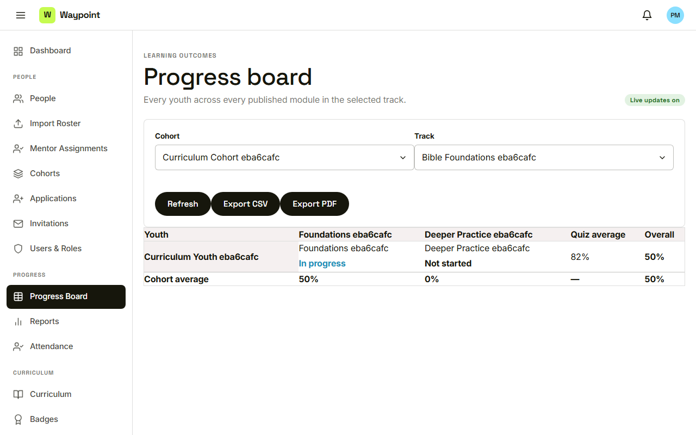
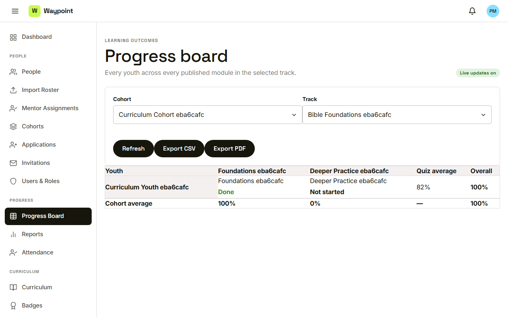
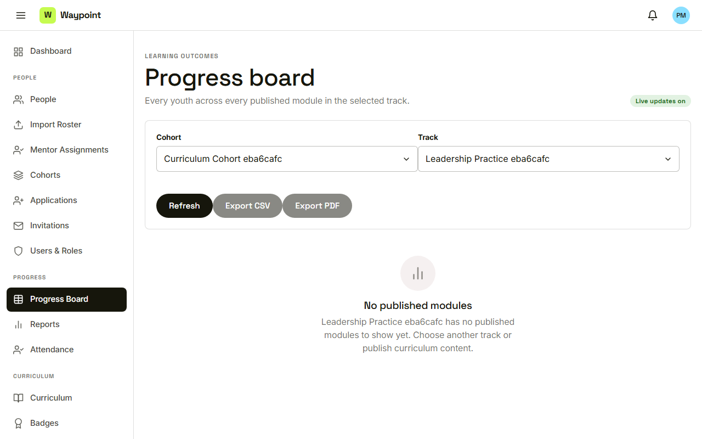

Waypoint · Video 031
The progress board
A live spreadsheet replacement
Cohort and track

Choose a cohort and a track
Reading the board
Cells, quiz average, overall, cohort average
It updates itself

Done, and one hundred percent overall
No published modules

Nothing to show, nothing to export
Things to remember
Pick a cohort and a track
Cells read Done, In progress, Not started or Not assigned
The board updates itself
Exports follow the selection